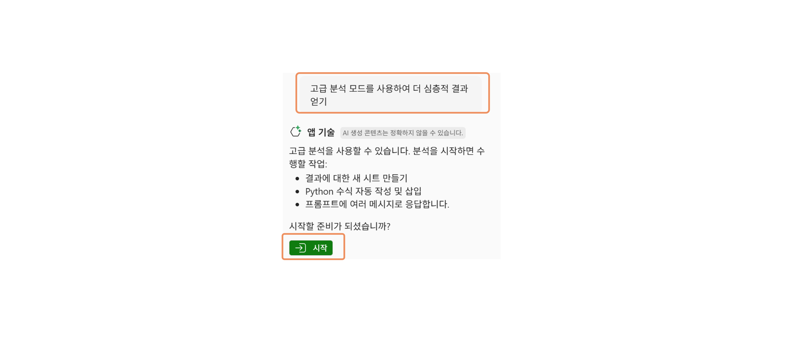

이번 퀘스트에서는 통계 데이터를 활용하여 시장과 상권을 분석하고 인사이트를 확인합니다.

- 다음의 링크로 이동하여 에서 "서울지역상권데이터.xlsx" 파일을 다운로드 합니다.
- Excel을 실행하고, 다운로드한 파일을 열어 파일을 확인합니다. 본격적으로 Copilot을 사용하기 위해 "복사본 저장(다른 이름으로 저장)"을 선택하여 OneDrive에 업로드합니다.
-
Excel 홈 메뉴에서 오른쪽 부분의 "Copilot" 아이콘 아래 화살표를 선택하여 "앱기술" 메뉴를 선택합니다.

- 아래의 샘플 프롬프트를 입력합니다. [대괄호]로 싸여 있는 부분을 취향에 따라 수정하십시오. (대괄호는 지우시고요)
- 내용을 창의적으로 변경해보면서 데이터의 인사이트를 확인합니다.
- 조금 더 심층적인 데이터 분석이 필요하다면 고급 분석을 할 수 있습니다.
- 프롬프트 창에 "고급 분석 모드를 사용하여 더 심층적인 결과 얻기"를 입력합니다.
- 고급 분석 모드 "시작" 버튼을 선택합니다. 
🚩 데이터 분석하기
통계 정보를 활용하여 데이터를 분석하여 인사이트를 확인합니다.
[샘플 프롬프트]
지역별 유동인구 컬럼을 추가해줘
가게당 유동인구수를 구해서 “유동인구비율＂ 컬럼을 추가해줘
유동인구비율이 높은 지역 5개를 보여줘
지역별 가게 생존율 컬럼을 추가해줘. 전체가게 3년 생존율을 알고싶어
3년 생존율의 평균이 얼마야?
지역별 2024년 개업가게수와 폐업가게수를 추가해줘
폐업율 컬럼을 추가해줘
개업가게수보다 폐업가게수가 높은 지역을 하이라이트해줘
🚩 데이터 고급 분석하기
고급분석 모드를 수행하여 심층적인 분석을 진행합니다.
[샘플 프롬프트]
유동인구와 3년 생존율 간의 상관관계 시각화
프렌차이즈 가게의 비율과 3년 생존율의 상관관계는?
프랜차이즈 비율이 높은 상위/하위 지역별 3년 생존율 비교
지역별 개업가게수 트렌드 시각화해줘
상권을 점수화하고 싶어. 점수화 모델을 제안해줘
상권 점수화에 사용할 변수별 가중치 추천 요청
천된 가중치로 상권 점수 산출